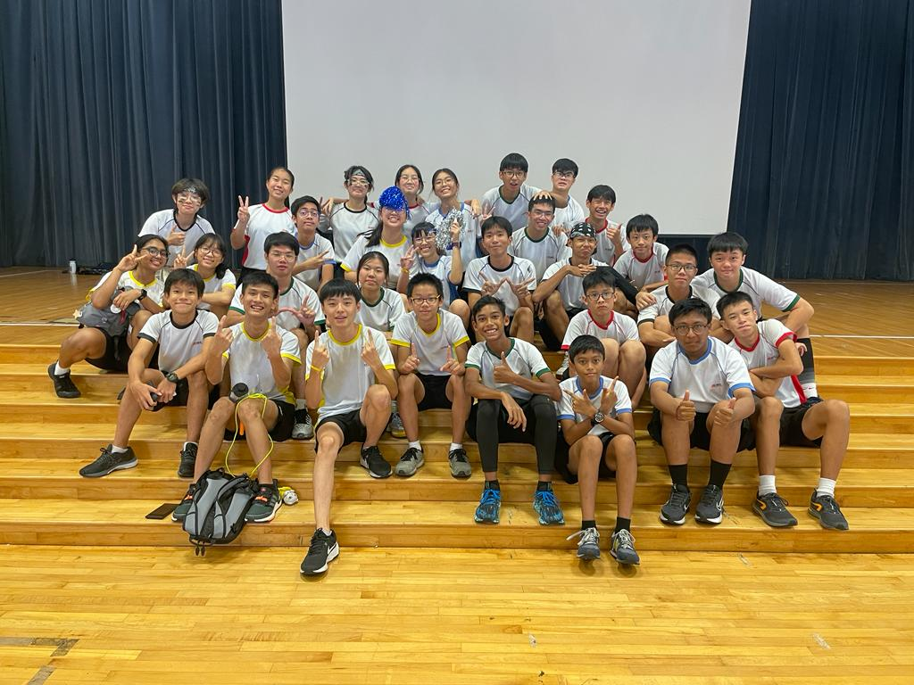

During my tenure as the school's Black House Vice-captain, I strived to lead my house to the common goal of becoming house champion. In 2023, I led Black House to regaining the title of "House Champion".
As part of a Secondary One "Leaders in Training" programme, I mentored potential student leaders by introducing them to what the house committee does and provided feedback on an event planning task, to experience what it takes to be in the house committee.
I also planned and facilitated inter-house games for the school, fostering competitiveness while promoting the house spirit. Not only did I learn how to plan competitions, but I also had to consider many factors, such as the limitations we had to work with.
I was also involved in facilitating and planning the annual S2 Outdoor Education Expedition (OEE), where students trek and appreciate nature while learning teamwork, outdoor cooking and first aid skills.
 Jarelland
Jarelland